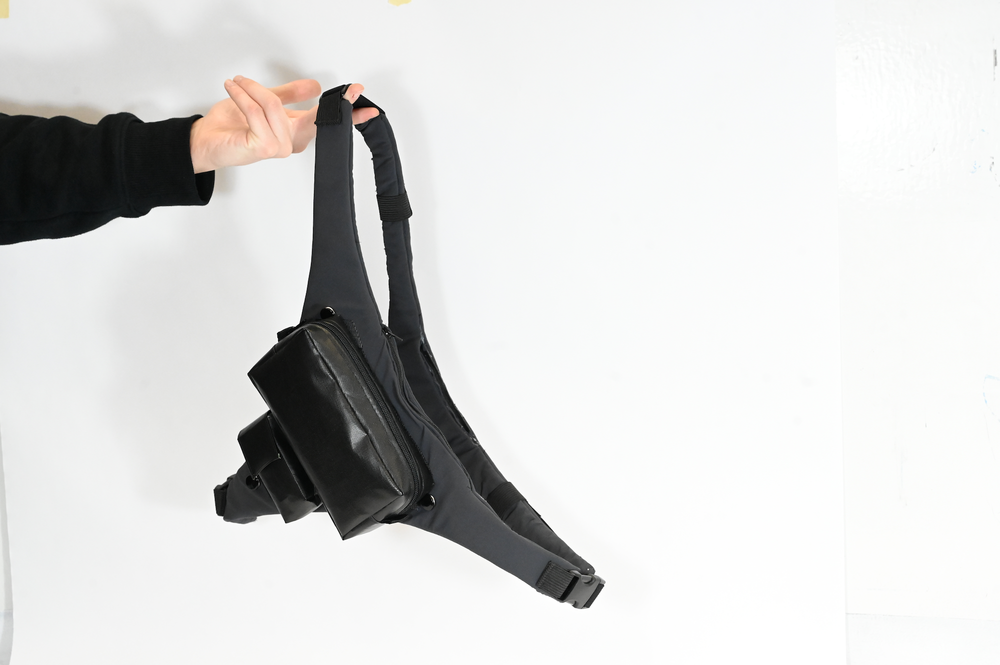
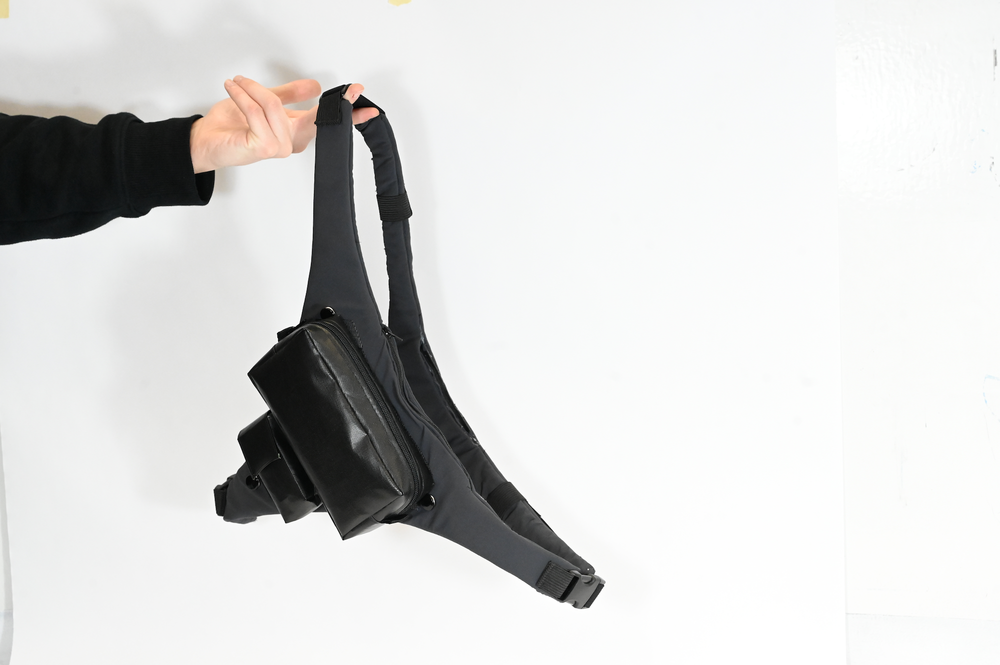
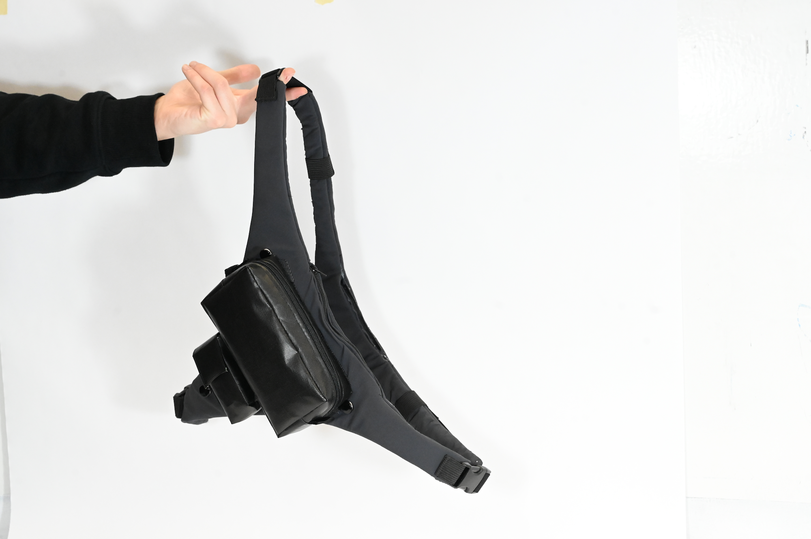

An adjustable and modular active cross-body bag designed for those on the go
Jan 2024
Machine Sewing
Hand Sewing
Photoshop
Illustrator
Danny Losada, Emerson Sweeney
The TriFlex Sling is a group project submission for the annual VTID Program Design Competition. Introducing the TriFlex Sling, the ultimate active cross-body bag, designed for those on the go. The sling includes three adjustable straps, ensuring it remains snug and secure during even the most agile activities. It comes with three versatile pouches that attach to the velcro panel to carry essentials like cellphones, wallets, earbuds, and more. The body of the sling also includes two inner zipper pockets, strategically placed against your body, offering a safe and accessible spot for your valuables. Crafted from polyester and nylon, this bag meets your storage needs; and it does so with durability, modularity, and flair. No matter your adventure, the TriFlex Sling is the perfect companion. Move Free, Stay Secure.
Aside from group ideation and discussion, I was responsible for the making of the sling's main body. I created the flat patterns for the main body and sewed them together over a span of 3 days. I was also responsible for the graphic design and composition of the poster as well as the design of the logo and selecting the font.
